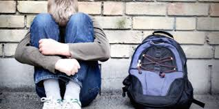

731,300 (17.1%) of all children in Australia are living in poverty.
This figure is up 2% over the past decade (2004-2014)
3,000,000 people are living in poverty in Australia
In 1987, Prime Minister Bob Hawke famously proclaimed "by 1990, no Australian child will be living in poverty".
This violates the United Nations Conventions on the Rights of the Child, which Australia signed in November of 1989, clearly states in Article 6, "Children have the right to live a full life", Article 24, "Children have the right to good quality health care, clean water, nutritious food, and a clean environment so that they will stay healthy", Article 26, "The Government should provide extra money to families in need", Article 27, "Children have a right to a standard of living that is good enough to meet their physical and mental needs", Article 28, "Children have the right to an education", Article 31, "Children have the right to relax, play, and join in a wide range of leisure activities", Article 36, "Children should be protected from any activities that may hurt their development", and Article 42, "The Government should make the Convention clearly known to all parents and children".